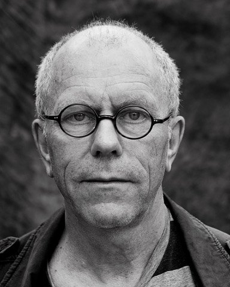
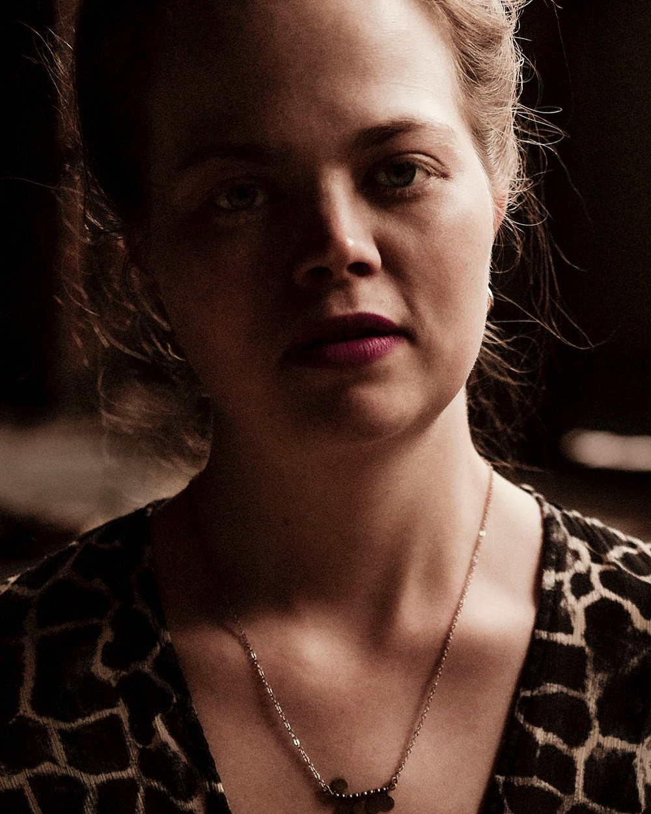

About
The people behind it

Tellef Kvifte
Founder. Musician, producer and folk music researcher

Guro Kvifte Nesheim
Composer, fiddle and Hardanger fiddle player
Our story
Taragot Sounds is an independent Norwegian record label founded in 2014 by musician, producer and folk music researcher Tellef Kvifte. The label was originally set up as a platform for the projects of Tellef, Guro Kvifte Nesheim (composer, fiddle and Hardanger fiddle player) and Knut Kvifte Nesheim (composer, drummer and vibraphonist). Together they have built a label that releases traditional music, folk music, contemporary jazz and free improvisation, with a musical expression that ranges from acoustic to electronic, and from traditional to experimental.
Over time, a wider circle of fellow musicians and friends has joined in, and today the catalogue counts close to 50 releases. What they all share is a musical double vision, with an eye for both roots and renewal.
The name Taragot comes from the Eastern European wind instrument tárogató, which has its roots in Romanian and Hungarian folk music, but has also been played by renowned jazz musicians such as Charles Lloyd and Joe Lovano. Like the instrument, Taragot Sounds embraces music in the space between tradition and the contemporary.
All releases are for sale on Bandcamp (opens in a new tab), and available on every streaming service.